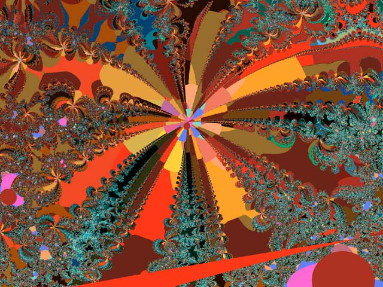
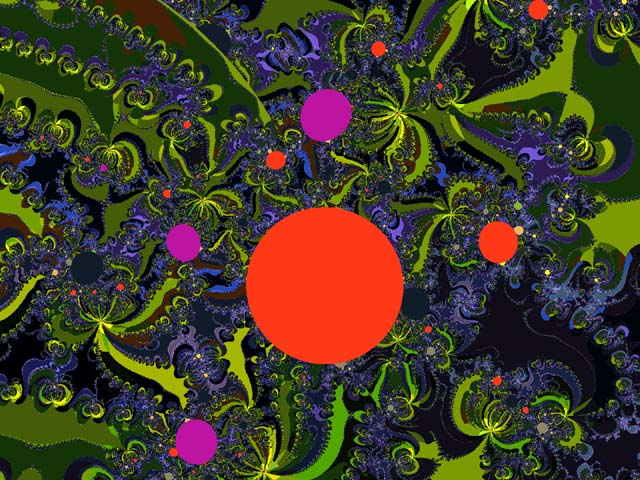
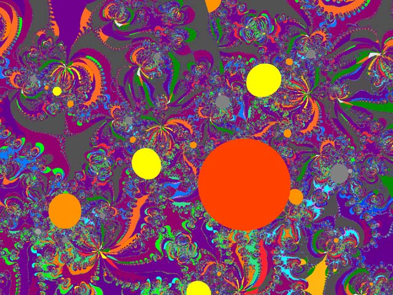
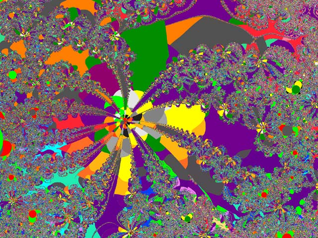

Four images intended as a fractal metaphor of a tropical garden.
They were drawn by a formula written by Vincent Damion Presogna.
They will scroll here slowly at resolution of 640 x 480 (total 700K). Please be patient.




Return to
Don Archer Digital Art